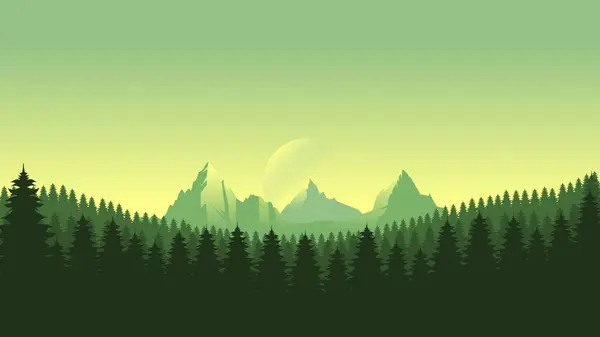
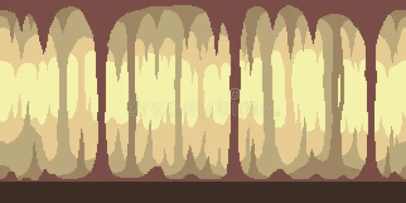

You find yourself at a crossroads. Where will you go?
Enter the Dark Forest Explore the Mysterious Cave
The trees loom over you. Strange sounds echo in the distance.
Return to Crossroads
A deep cave lies before you. The air feels heavy.
Return to Crossroads